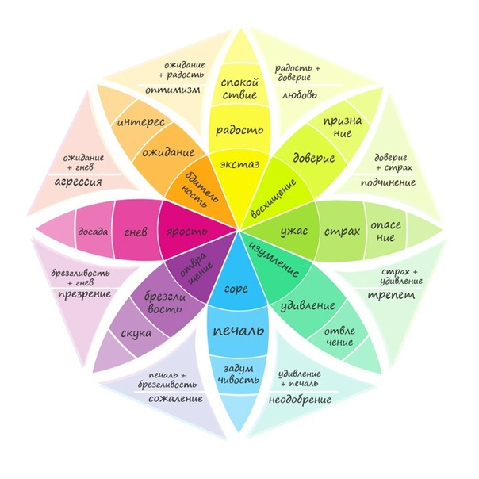

Лекция: Айсберг чувств и эмоций
Эмоции и чувства – это язык, на котором наша психика говорит с нами. Но мы часто путаем эти понятия, не понимаем их глубины и тонем в этом внутреннем океане без карты.
Эмоции и чувства – это язык, на котором наша психика говорит с нами. Но мы часто путаем эти понятия, не понимаем их глубины и тонем в этом внутреннем океане без карты.
Сегодня мы разберём этот айсберг от вершины до самого дна.
Айсберг: метафора устройства
Представьте айсберг в океане.
Проблема: Мы часто судим о людях по тому, что над водой, не понимая, какая махина скрывается в глубине. И точно так же мы не понимаем себя.
Эмоции vs Чувства
В быту мы используем эти слова как синонимы. Но психология их строго разделяет.
| Критерий | Эмоции | Чувства |
|---|---|---|
| Длительность | Кратковременные (секунды–минуты) | Долговременные (годы, десятилетия) |
| Интенсивность | Яркие, бурные | Спокойные, глубокие |
| Причина | Конкретная ситуация «здесь и сейчас» | Сложившиеся отношения, ценности |
| Осознаваемость | Часто неосознаваемы | Могут быть осознаны |
| Телесность | Сильные телесные проявления | Слабая телесная привязка |
| Пример | Испуг при резком звуке | Любовь к матери, которая длится всю жизнь |
Образ для запоминания:
Эмоция – это волна на поверхности океана. Она пришла, накрыла и ушла.
Чувство – это само течение океана. Оно всегда есть, но мы его не видим, пока не всмотримся.
Полная классификация
Полная классификация эмоций
Исследователь Пол Экман выделил 7 базовых эмоций, которые универсальны для всех культур – они узнаваемы по мимике в любой точке мира:
Эти эмоции появляются только в связи с другими людьми и нашим положением в социуме – их нет у животных без социальной жизни:
Полная классификация чувств
Связаны с оценкой поступков с точки зрения добра и зла – формируются через воспитание и культуру:
| Чувство | Суть | Пример |
|---|---|---|
| Совесть | Внутренний судья, оценивающий соответствие поступков своим ценностям | «Я поступил неправильно, и меня гложет» |
| Долг | Осознание необходимости следовать обязательствам | «Я должен заботиться о родителях» |
| Справедливость | Чувство того, что мир должен быть честным | «Это нечестно, что он получил больше» |
| Достоинство | Чувство собственной ценности, самоуважение | «Я не позволю себя унижать» |
Связаны с процессом познания, поиском истины – сопровождают мышление:
| Чувство | Суть | Пример |
|---|---|---|
| Любопытство | Желание узнать новое | «Интересно, а как это устроено?» |
| Удивление | Реакция на неожиданное знание | «Ничего себе, я не знал!» |
| Сомнение | Чувство неуверенности в истине | «А точно ли это правда?» |
| Уверенность | Чувство ясности, понимания | «Да, теперь я это понял» |
| Озарение (Инсайт) | Вспышка понимания | «Эврика! Вот как это работает!» |
Связаны с восприятием прекрасного и безобразного – отклик на форму, гармонию, выразительность:
| Чувство | Суть | Пример |
|---|---|---|
| Прекрасное | Чувство гармонии, совершенства | Мурашки от музыки, слёзы от картины |
| Возвышенное | Чувство величия, бесконечности | Созерцание звёздного неба, океана |
| Трагическое | Чувство от столкновения с судьбой, страданием | Катарсис в театре |
| Комическое | Чувство смешного, нелепого | Юмор, ирония, сатира |
| Безобразное | Чувство отвращения к дисгармонии | «Это уродливо, это режет глаз» |
Рейтинг чувств и эмоций
Этот рейтинг построен по принципу «от животного к человеческому» – от простых врождённых реакций к сложным переживаниям, выходящим за пределы конкретной ситуации.
Нажмите на любое чувство, чтобы выделить его.
Наблюдение: Чем выше уровень, тем больше в чувстве культуры, личности и осознанности. Но все уровни важны – рефлекторные спасают жизнь, а высшие наполняют её смыслом.
Часть 6. Пирамида чувств (по аналогии с Маслоу)
Если выстроить чувства в иерархию от базовых к высшим – по той же логике, что пирамиду потребностей Маслоу:
Важный вывод: Чтобы испытывать чувства высшего уровня, должны быть удовлетворены (хотя бы минимально) потребности низших. Голодный и замёрзший человек не будет задумываться о смысле жизни.
Колесо эмоций (модель Плутчика)
Плутчик предложил модель, где эмоции делятся на 8 базовых пар-антагонистов. Сложные эмоции – комбинации базовых.

Комбинации эмоций
Вывод: Наши чувства редко приходят поодиночке. Они смешиваются, как цвета в спектре.
Упражнение: Карта моих чувств
Разделите лист на 4 колонки. Запишите чувства в каждую – это покажет ваши «слепые зоны».
Зачем это? Чувства, которые мы скрываем или не замечаем, всё равно управляют нами из-под воды – как та часть айсберга, которую мы не видим.
Упражнение: Карта тела и эмоций
Эмоции живут не только в голове – они отражаются в теле. Напишите, где вы чувствуете каждую эмоцию.
Нажмите на зону тела
Подсказка: Тревога – «бабочки» в животе. Гнев – напряжение в руках и челюсти. Страх – холод в ногах. Грусть – тяжесть в груди.
Упражнение: Дневник чувств
Каждый вечер записывайте 3 главные эмоции за день. Через неделю вы увидите свой эмоциональный ландшафт.
Совет: Не пишите «было плохо». Пишите точнее: «тревога, потом облегчение, потом лёгкая грусть». Называйте эмоции по имени.
Главные выводы
- Эмоции – быстрые волны. Чувства – глубокие течения.
- У эмоций и чувств есть иерархия: от животных реакций до человеческих смыслов.
- Чем выше уровень чувства, тем больше в нём культуры, ценностей и личности.
- Под каждой «негативной» эмоцией лежит позитивная потребность (в безопасности, уважении, любви).
- Осознавать свои чувства – значит расширять территорию над водой, делая айсберг меньше и управляемее.
- Золотое правило: Не бывает «плохих» и «хороших» чувств. Бывают чувства, которые мы умеем или не умеем проживать.
Человек, который умеет различать свои чувства и спускаться вглубь айсберга, перестаёт быть игрушкой эмоций. Он становится капитаном своего внутреннего океана.